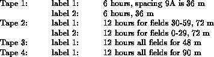
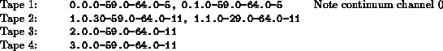

The Program NSCAN

The program NSCAN allows the user to interact with the uv-data file (SCN-file). The structure of this file is explained in detail in a separate section of this cookbook. The program NSCAN offers the following main options:
- LOAD: Load WSRT uv-data (in WSRT circle format) from tape, disk, DAT or optical disk into a SCN-file. The input may be from multiple tapes and/or labels. The user may select data, and change the integration time.
- DUMP: Dump WSRT data (in WSRT circle format) from tape or DAT or optical disk to a disk file (in WSRT circle format).
- FROM_OLD: Convert an old (R-series format) SCN-file into a NEWSTAR SCN-file.
- TO_OLD: Convert a NEWSTAR SCN-file into an old (R-series format) SCN-file.
- SHOW: Show/edit the contents of a SCN-file: layout, header information (incl corrections), uv-data and uv-model. This is demonstrated in the section `Description of the SCN-file' in this Cookbook.
- DELETE: Delete (or un-delete) uv-data in a SCN-file, according to certain selection criteria. Actually, the data is only disabled (flagged) reversibly by making the attached weight-factor negative.
- COPY: (not yet available) Copy selected Sets from a SCN file to a new (secondary) SCN-file. The uv-data may be physically modified (e.g. corrections, model subtraction, change of integration time) in this process. This option will probably be implemented in a separate program NCOPY.
- REGROUP: Select and reorganise the data in a SCN-file. Make a new group directory entry (job tree) with specified Sets in it.
- UVFITS: Convert a SCN-file into a UVFITS file (tape/disk) for further image analysis in AIPS. It is recommended to do all WSRT uv-data processing first in NEWSTAR , since AIPS uv-data processing is rather VLA-oriented, and does not do justice to WSRT data.
- PFITS: Print a summary of a UVFITS (AIPS) tape/disk file, showing all keywords and a limited set of data.
- CVX: Convert a SCN file from other machine's format to local machine's.
- NVS: Convert a SCN file to newest version. This should be run if SCN file made before the dates:
910417: add MJD to set header.
900907: add precession rotation angle.
900220: add polarisation corrections.
920828: recalculate MJD for observations aborted at Wbork.
- WERR: Correct mosaic tape errors. This only concerns mosaic data taken in 1991.
- QUIT: Exit the program NSCAN
An example: Let us assume we have a mosaicking observations at 4 settings of ABCD of 60 fields, 64 line channels. There will thus be 12 spokes per 12 hour per field. These data are on 4 tapes:

The Set numbers will be unknown, but the indices generated are (if they are read in in order of tape and label):

If a map is wanted of field 31 using spacings 36 m and 72 m averaging all odd channels between 17 and 25, the data could be specified as:
0..31.17-25:2,1..31.17-25:2
or 0-1.*.31.17-25:2
.
.
.
.
.
.
.
.
.
.
.
.
.
.
.
.
.
.
.
.